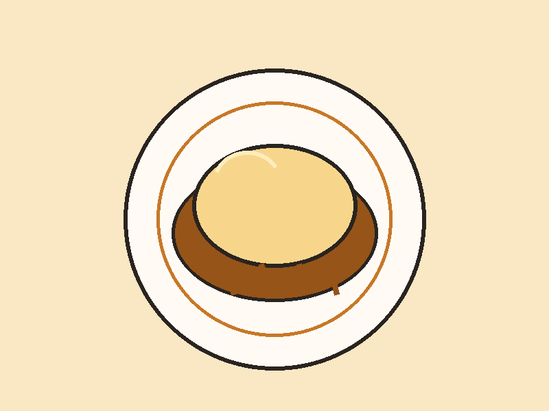
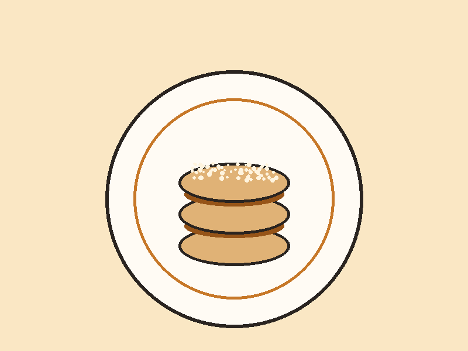
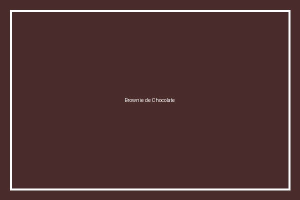
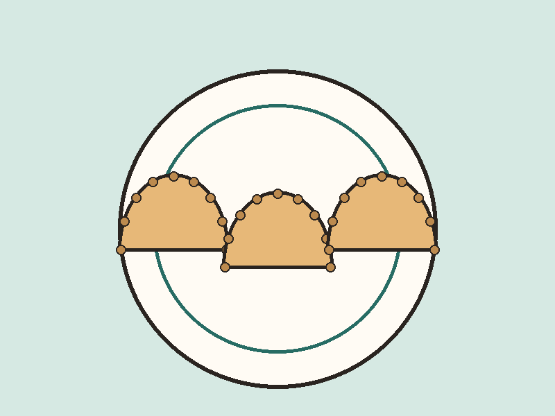
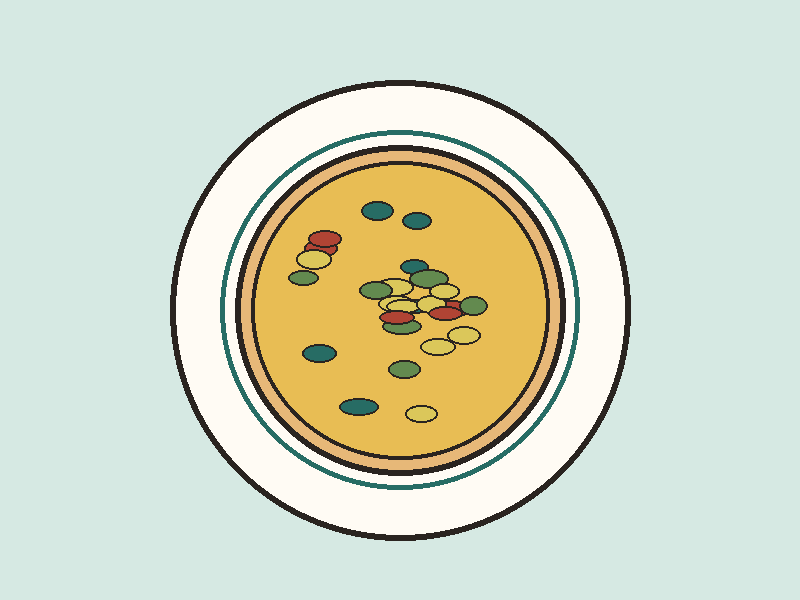

Catálogo de Recetas
Seleccione una categoría a continuación para filtrar las recetas que se muestran en el centro de la pantalla:

Tarta de Manzana
Descargar Receta (PDF)
Brownie de Chocolate
Descargar Receta (PDF)
Empanadas Criollas
Descargar Receta (PDF)
Pizza Margarita
Descargar Receta (PDF)Tarta de Espinaca y Queso
Descargar Receta (PDF)Quién Mantiene el Centro
Este centro de cocina accesible es mantenido por el Equipo de Inclusión Digital y Gastronomía.
Nuestro objetivo principal es asegurar que todas las personas, independientemente de sus capacidades motrices, cognitivas o visuales, puedan acceder a recetas claras, bien estructuradas y fáciles de descargar.
Información de Contacto
Si desea enviar sugerencias o consultas relativas a la accesibilidad o al contenido del sitio, puede comunicarse con nosotros:
- Correo Electrónico: contacto@recetasaccesibles.org
- Teléfono de Atención: +54 11 4444-5555
- Horario de Atención: Lunes a Viernes de 09:00 a 17:00 hs